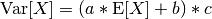

Tools: the Signal class¶
The Signal class and its subclasses¶
Warning
This subsection can be a bit confusing for beginners. Do not worry if you do not understand it all.
HyperSpy stores the data in the BaseSignal class, that is
the object that you get when e.g. you load a single file using
load(). Most of the data analysis functions are also contained in
this class or its specialized subclasses. The BaseSignal
class contains general functionality that is available to all the subclasses.
The subclasses provide functionality that is normally specific to a particular
type of data, e.g. the Signal1D class provides
common functionality to deal with one-dimensional (e.g. spectral) data and
EELSSpectrum (which is a subclass of
Signal1D) adds extra functionality to the
Signal1D class for electron energy-loss
spectroscopy data analysis.
Changed in version 0.8.5.
Currently the following signal subclasses are available:
Changed in version 0.8.5.
Note that in 0.8.5 the Signal1D and
Signal2D classes were created to deprecate the
old Spectrum and
Image classes.
The signals module, which contains all available signal subclasses,
is imported in the user namespace when loading hyperspy. In the following
example we create a Signal2D instance from a 2D numpy array:
>>> im = hs.signals.Signal2D(np.random.random((64,64)))
The different signals store other objects in what are called attributes. For
examples, the data is stored in a numpy array in the
data attribute, the original parameters in the
original_metadata attribute, the mapped parameters
in the metadata attribute and the axes
information (including calibration) can be accessed (and modified) in the
axes_manager attribute.
Transforming between signal subclasses¶
The different subclasses are characterized by three
metadata attributes (see the table below):
- record_by
- Can be “spectrum”, “image” or “”, the latter meaning undefined and describes
the way the data is arranged in memory. It is possible to transform any
BaseSignalsubclass to aSignal1DorSignal2Dsubclass using the followingBaseSignalmethods:as_signal2D()andas_signal1D(). In additionSignal1Dinstances can be transformed into two-dimensional signals usingto_signal2D()and two-dimensional instances transformed into one dimensional instances usingto_signal1D(). When transforming between one and two dimensinoal signal classes the order in which the data array is stored in memory is modified to improve performance. Also, some functions, e.g. plotting or decomposing, will behave differently. - signal_type
- Describes the nature of the signal. It can be any string, normally the
acronym associated with a particular signal. In certain cases HyperSpy provides
features that are only available for a particular signal type through
BaseSignalsubclasses. TheBaseSignalmethodset_signal_type()changes the signal_type in place, which may result in aBaseSignalsubclass transformation. - signal_origin
- Describes the origin of the signal and can be “simulation” or “experiment” or “”, the
latter meaning undefined. In certain cases HyperSpy provides features that are only
available for a particular signal origin. The
BaseSignalmethodset_signal_origin()changes the signal_origin in place, which may result in aBaseSignalsubclass transformation.
| BaseSignal subclass | record_by | signal_type | signal_origin |
|---|---|---|---|
BaseSignal |
|||
Signal1D |
spectrum | ||
SpectrumSimulation |
spectrum | simulation | |
EELSSpectrum |
spectrum | EELS | |
EDSSEMSpectrum |
spectrum | EDS_SEM | |
EDSTEMSpectrum |
spectrum | EDS_TEM | |
Signal2D |
image | ||
ImageSimulation |
image | simulation |
The following example shows how to transform between different subclasses.
>>> s = hs.signals.Signal1D(np.random.random((10,20,100))) >>> s <Signal1D, title: , dimensions: (20, 10|100)> >>> s.metadata ├── record_by = spectrum ├── signal_origin = ├── signal_type = └── title = >>> im = s.to_signal2D() >>> im <Signal2D, title: , dimensions: (100|20, 10)> >>> im.metadata ├── record_by = image ├── signal_origin = ├── signal_type = └── title = >>> s.set_signal_type("EELS") >>> s <EELSSpectrum, title: , dimensions: (20, 10|100)> >>> s.set_signal_origin("simulation") >>> s <EELSSpectrumSimulation, title: , dimensions: (20, 10|100)>
Binned and unbinned signals¶
New in version 0.7.
Signals that are a histogram of a probability density function (pdf) should
have the signal.metadata.Signal.binned attribute set to
True. This is because some methods operate differently in signals that are
binned.
The default value of the binned attribute is shown in the
following table:
| BaseSignal subclass | binned |
|---|---|
BaseSignal |
False |
Signal1D |
False |
SpectrumSimulation |
False |
EELSSpectrum |
True |
EDSSEMSpectrum |
True |
EDSTEMSpectrum |
True |
Signal2D |
False |
ImageSimulation |
False |
To change the default value:
>>> s.metadata.Signal.binned = True
Generic tools¶
Below we briefly introduce some of the most commonly used tools (methods). For
more details about a particular method click on its name. For a detailed list
of all the methods available see the BaseSignal documentation.
The methods of this section are available to all the signals. In other chapters methods that are only available in specialized subclasses.
Indexing¶
New in version 0.6.
Changed in version 0.8.1.
Indexing a BaseSignal provides a powerful, convenient and
Pythonic way to access and modify its data. In HyperSpy indexing is achieved
using isig and inav, which allow the navigation and signal dimensions
to be indexed independently. The idea is essentially to specify a subset of the
data based on its position in the array and it is therefore essential to know
the convention adopted for specifying that position, which is described here.
Those new to Python may find indexing a somewhat esoteric concept but once mastered it is one of the most powerful features of Python based code and greatly simplifies many common tasks. HyperSpy’s Signal indexing is similar to numpy array indexing and those new to Python are encouraged to read the associated numpy documentation on the subject.
Key features of indexing in HyperSpy are as follows (note that some of these features differ from numpy):
- HyperSpy indexing does:
- Allow independent indexing of signal and navigation dimensions
- Support indexing with decimal numbers.
- Use the image order for indexing i.e. [x, y, z,...] (hyperspy) vs [...,z,y,x] (numpy)
- HyperSpy indexing does not:
- Support indexing using arrays.
- Allow the addition of new axes using the newaxis object.
The examples below illustrate a range of common indexing tasks.
First consider indexing a single spectrum, which has only one signal dimension
(and no navigation dimensions) so we use isig:
>>> s = hs.signals.Signal1D(np.arange(10))
>>> s
<Signal1D, title: , dimensions: (|10)>
>>> s.data
array([0, 1, 2, 3, 4, 5, 6, 7, 8, 9])
>>> s.isig[0]
<Signal1D, title: , dimensions: (|1)>
>>> s.isig[0].data
array([0])
>>> s.isig[9].data
array([9])
>>> s.isig[-1].data
array([9])
>>> s.isig[:5]
<Signal1D, title: , dimensions: (|5)>
>>> s.isig[:5].data
array([0, 1, 2, 3, 4])
>>> s.isig[5::-1]
<Signal1D, title: , dimensions: (|6)>
>>> s.isig[5::-1]
<Signal1D, title: , dimensions: (|6)>
>>> s.isig[5::2]
<Signal1D, title: , dimensions: (|3)>
>>> s.isig[5::2].data
array([5, 7, 9])
Unlike numpy, HyperSpy supports indexing using decimal numbers, in which case HyperSpy indexes using the axis scales instead of the indices.
>>> s = hs.signals.Signal1D(np.arange(10))
>>> s
<Signal1D, title: , dimensions: (|10)>
>>> s.data
array([0, 1, 2, 3, 4, 5, 6, 7, 8, 9])
>>> s.axes_manager[0].scale = 0.5
>>> s.axes_manager[0].axis
array([ 0. , 0.5, 1. , 1.5, 2. , 2.5, 3. , 3.5, 4. , 4.5])
>>> s.isig[0.5:4.].data
array([1, 2, 3, 4, 5, 6, 7])
>>> s.isig[0.5:4].data
array([1, 2, 3])
>>> s.isig[0.5:4:2].data
array([1, 3])
Importantly the original BaseSignal and its “indexed self”
share their data and, therefore, modifying the value of the data in one
modifies the same value in the other. Note also that in the example below
s.data is used to access the data as a numpy array directly and this array is
then indexed using numpy indexing.
>>> s = hs.signals.Spectrum(np.arange(10))
>>> s
<Spectrum, title: , dimensions: (10,)>
>>> s.data
array([0, 1, 2, 3, 4, 5, 6, 7, 8, 9])
>>> si = s.isig[::2]
>>> si.data
array([0, 2, 4, 6, 8])
>>> si.data[:] = 10
>>> si.data
array([10, 10, 10, 10, 10])
>>> s.data
array([10, 1, 10, 3, 10, 5, 10, 7, 10, 9])
>>> s.data[:] = 0
>>> si.data
array([0, 0, 0, 0, 0])
Of course it is also possible to use the same syntax to index multidimensional
data treating navigation axes using inav and signal axes using isig.
>>> s = hs.signals.Signal1D(np.arange(2*3*4).reshape((2,3,4)))
>>> s
<Signal1D, title: , dimensions: (10, 10, 10)>
>>> s.data
array([[[ 0, 1, 2, 3],
[ 4, 5, 6, 7],
[ 8, 9, 10, 11]],
[[12, 13, 14, 15],
[16, 17, 18, 19],
[20, 21, 22, 23]]])
>>> s.axes_manager[0].name = 'x'
>>> s.axes_manager[1].name = 'y'
>>> s.axes_manager[2].name = 't'
>>> s.axes_manager.signal_axes
(<t axis, size: 4>,)
>>> s.axes_manager.navigation_axes
(<x axis, size: 3, index: 0>, <y axis, size: 2, index: 0>)
>>> s.inav[0,0].data
array([0, 1, 2, 3])
>>> s.inav[0,0].axes_manager
<Axes manager, axes: (<t axis, size: 4>,)>
>>> s.inav[0,0].isig[::-1].data
array([3, 2, 1, 0])
>>> s.isig[0]
<Signal1D, title: , dimensions: (2, 3)>
>>> s.isig[0].axes_manager
<Axes manager, axes: (<x axis, size: 3, index: 0>, <y axis, size: 2, index: 0>)>
>>> s.isig[0].data
array([[ 0, 4, 8],
[12, 16, 20]])
Independent indexation of the signal and navigation dimensions is demonstrated further in the following:
>>> s = hs.signals.Signal1D(np.arange(2*3*4).reshape((2,3,4)))
>>> s
<Signal1D, title: , dimensions: (10, 10, 10)>
>>> s.data
array([[[ 0, 1, 2, 3],
[ 4, 5, 6, 7],
[ 8, 9, 10, 11]],
[[12, 13, 14, 15],
[16, 17, 18, 19],
[20, 21, 22, 23]]])
>>> s.axes_manager[0].name = 'x'
>>> s.axes_manager[1].name = 'y'
>>> s.axes_manager[2].name = 't'
>>> s.axes_manager.signal_axes
(<t axis, size: 4>,)
>>> s.axes_manager.navigation_axes
(<x axis, size: 3, index: 0>, <y axis, size: 2, index: 0>)
>>> s.inav[0,0].data
array([0, 1, 2, 3])
>>> s.inav[0,0].axes_manager
<Axes manager, axes: (<t axis, size: 4>,)>
>>> s.isig[0]
<Signal1D, title: , dimensions: (2, 3)>
>>> s.isig[0].axes_manager
<Axes manager, axes: (<x axis, size: 3, index: 0>, <y axis, size: 2, index: 0>)>
>>> s.isig[0].data
array([[ 0, 4, 8],
[12, 16, 20]])
The same syntax can be used to set the data values in signal and navigation dimensions respectively:
>>> s = hs.signals.Signal1D(np.arange(2*3*4).reshape((2,3,4)))
>>> s
<Signal1D, title: , dimensions: (10, 10, 10)>
>>> s.data
array([[[ 0, 1, 2, 3],
[ 4, 5, 6, 7],
[ 8, 9, 10, 11]],
[[12, 13, 14, 15],
[16, 17, 18, 19],
[20, 21, 22, 23]]])
>>> s.inav[0,0].data
array([0, 1, 2, 3])
>>> s.inav[0,0] = 1
>>> s.inav[0,0].data
array([1, 1, 1, 1])
>>> s.inav[0,0] = s[1,1]
>>> s.inav[0,0].data
array([16, 17, 18, 19])
Signal operations¶
New in version 0.6.
New in version 0.8.3.
BaseSignal supports all the Python binary arithmetic
opearations (+, -, *, //, %, divmod(), pow(), **, <<, >>, &, ^, |),
augmented binary assignments (+=, -=, *=, /=, //=, %=, **=, <<=, >>=, &=,
^=, |=), unary operations (-, +, abs() and ~) and rich comparisons operations
(<, <=, ==, x!=y, <>, >, >=).
These operations are performed element-wise. When the dimensions of the signals are not equal numpy broadcasting rules apply independently for the navigation and signal axes.
In the following example s2 has only one navigation axis while s has two. However, because the size of their first navigation axis is the same, their dimensions are compatible and s2 is broacasted to match s‘s dimensions.
>>> s = hs.signals.Signal2D(np.ones((3,2,5,4)))
>>> s2 = hs.signals.Signal2D(np.ones((2,5,4)))
>>> s
<Signal2D, title: , dimensions: (2, 3|4, 5)>
>>> s2
<Signal2D, title: , dimensions: (2|4, 5)>
>>> s + s2
<Signal2D, title: , dimensions: (2, 3|4, 5)>
In the following example the dimensions are not compatible and an exception is raised.
>>> s = hs.signals.Signal2D(np.ones((3,2,5,4)))
>>> s2 = hs.signals.Signal2D(np.ones((3,5,4)))
>>> s
<Signal2D, title: , dimensions: (2, 3|4, 5)>
>>> s2
<Signal2D, title: , dimensions: (3|4, 5)>
>>> s + s2
Traceback (most recent call last):
File "<ipython-input-55-044bb11a0bd9>", line 1, in <module>
s + s2
File "<string>", line 2, in __add__
File "/home/fjd29/Python/hyperspy/hyperspy/signal.py", line 2686, in _binary_operator_ruler
raise ValueError(exception_message)
ValueError: Invalid dimensions for this operation
Broacasting operates exactly in the same way for the signal axes:
>>> s = hs.signals.Signal2D(np.ones((3,2,5,4)))
>>> s2 = hs.signals.Signal1D(np.ones((3, 2, 4)))
>>> s
<Signal2D, title: , dimensions: (2, 3|4, 5)>
>>> s2
<Signal1D, title: , dimensions: (2, 3|4)>
>>> s + s2
<Signal2D, title: , dimensions: (2, 3|4, 5)>
In-place operators also support broadcasting, but only when broadcasting would not change the left most signal dimensions:
>>> s += s2
>>> s
<Signal2D, title: , dimensions: (2, 3|4, 5)>
>>> s2 += s
Traceback (most recent call last):
File "<ipython-input-64-fdb9d3a69771>", line 1, in <module>
s2 += s
File "<string>", line 2, in __iadd__
File "/home/fjd29/Python/hyperspy/hyperspy/signal.py", line 2737, in _binary_operator_ruler
self.data = getattr(sdata, op_name)(odata)
ValueError: non-broadcastable output operand with shape (3,2,1,4) doesn't match the broadcast shape (3,2,5,4)
Iterating over the navigation axes¶
Signal instances are iterables over the navigation axes. For example, the following code creates a stack of 10 images and saves them in separate “png” files by iterating over the signal instance:
>>> image_stack = hs.signals.Signal2D(np.random.random((2, 5, 64,64)))
>>> for single_image in image_stack:
... single_image.save("image %s.png" % str(image_stack.axes_manager.indices))
The "image (0, 0).png" file was created.
The "image (1, 0).png" file was created.
The "image (2, 0).png" file was created.
The "image (3, 0).png" file was created.
The "image (4, 0).png" file was created.
The "image (0, 1).png" file was created.
The "image (1, 1).png" file was created.
The "image (2, 1).png" file was created.
The "image (3, 1).png" file was created.
The "image (4, 1).png" file was created.
The data of the signal instance that is returned at each iteration is a view of
the original data, a property that we can use to perform operations on the
data. For example, the following code rotates the image at each coordinate by
a given angle and uses the stack() function in combination
with list comprehensions
to make a horizontal “collage” of the image stack:
>>> import scipy.ndimage
>>> image_stack = hs.signals.Signal2D(np.array([scipy.misc.lena()]*5))
>>> image_stack.axes_manager[1].name = "x"
>>> image_stack.axes_manager[2].name = "y"
>>> for image, angle in zip(image_stack, (0, 45, 90, 135, 180)):
... image.data[:] = scipy.ndimage.rotate(image.data, angle=angle,
... reshape=False)
>>> collage = hs.stack([image for image in image_stack], axis=0)
>>> collage.plot()

Rotation of images by iteration.
New in version 0.7.
Iterating external functions with the map method¶
Performing an operation on the data at each coordinate, as in the previous example,
using an external function can be more easily accomplished using the
map() method:
>>> import scipy.ndimage
>>> image_stack = hs.signals.Signal2D(np.array([scipy.misc.lena()]*4))
>>> image_stack.axes_manager[1].name = "x"
>>> image_stack.axes_manager[2].name = "y"
>>> image_stack.map(scipy.ndimage.rotate,
... angle=45,
... reshape=False)
>>> collage = hs.stack([image for image in image_stack], axis=0)
>>> collage.plot()

Rotation of images by the same amount using map().
The map() method can also take variable
arguments as in the following example.
>>> import scipy.ndimage
>>> image_stack = hs.signals.Signal2D(np.array([scipy.misc.lena()]*4))
>>> image_stack.axes_manager[1].name = "x"
>>> image_stack.axes_manager[2].name = "y"
>>> angles = hs.signals.Signal(np.array([0, 45, 90, 135]))
>>> angles.axes_manager.set_signal_dimension(0)
>>> modes = hs.signals.Signal(np.array(['constant', 'nearest', 'reflect', 'wrap']))
>>> modes.axes_manager.set_signal_dimension(0)
>>> image_stack.map(scipy.ndimage.rotate,
... angle=angles,
... reshape=False,
... mode=modes)
calculating 100% |#############################################| ETA: 00:00:00Cropping

Rotation of images using map() with different
arguments for each image in the stack.
Cropping¶
Cropping can be performed in a very compact and powerful way using
Indexing . In addition it can be performed using the following
method or GUIs if cropping signal1D or signal2D. There is also a general crop()
method that operates in place.
Folding and unfolding¶
When dealing with multidimensional datasets it is sometimes useful to transform the data into a two dimensional dataset. This can be accomplished using the following two methods:
It is also possible to unfold only the navigation or only the signal space:
Splitting and stacking¶
Several objects can be stacked together over an existing axis or over a
new axis using the stack() function, if they share axis
with same dimension.
>>> image = hs.signals.Signal2D(scipy.misc.lena())
>>> image = hs.stack([hs.stack([image]*3,axis=0)]*3,axis=1)
>>> image.plot()

Stacking example.
An object can be splitted into several objects
with the split() method. This function can be used
to reverse the stack() function:
>>> image = image.split()[0].split()[0]
>>> image.plot()

Splitting example.
Simple operations over one axis¶
Changing the data type¶
Even if the original data is recorded with a limited dynamic range, it is often
desirable to perform the analysis operations with a higher precision.
Conversely, if space is limited, storing in a shorter data type can decrease
the file size. The change_dtype() changes the data
type in place, e.g.:
>>> s = hs.load('EELS Spectrum Image (high-loss).dm3')
Title: EELS Spectrum Image (high-loss).dm3
Signal type: EELS
Data dimensions: (21, 42, 2048)
Data representation: spectrum
Data type: float32
>>> s.change_dtype('float64')
>>> print(s)
Title: EELS Spectrum Image (high-loss).dm3
Signal type: EELS
Data dimensions: (21, 42, 2048)
Data representation: spectrum
Data type: float64
New in version 0.7:In addition to all standard numpy dtypes HyperSpy supports four extra dtypes for RGB images: rgb8, rgba8, rgb16 and rgba16. Changing from and to any rgbx dtype is more constrained than most other dtype conversions. To change to a rgbx dtype the signal record_by must be “spectrum”, signal_dimension must be 3(4) for rgb(rgba) dtypes and the dtype must be uint8(uint16) for rgbx8(rgbx16). After conversion record_by becomes image and the spectra dimension is removed. The dtype of images of dtype rgbx8(rgbx16) can only be changed to uint8(uint16) and the record_by becomes “spectrum”.
In the following example we create
>>> rgb_test = np.zeros((1024, 1024, 3))
>>> ly, lx = rgb_test.shape[:2]
>>> offset_factor = 0.16
>>> size_factor = 3
>>> Y, X = np.ogrid[0:lx, 0:ly]
>>> rgb_test[:,:,0] = (X - lx / 2 - lx*offset_factor) ** 2 + (Y - ly / 2 - ly*offset_factor) ** 2 < lx * ly / size_factor **2
>>> rgb_test[:,:,1] = (X - lx / 2 + lx*offset_factor) ** 2 + (Y - ly / 2 - ly*offset_factor) ** 2 < lx * ly / size_factor **2
>>> rgb_test[:,:,2] = (X - lx / 2) ** 2 + (Y - ly / 2 + ly*offset_factor) ** 2 < lx * ly / size_factor **2
>>> rgb_test *= 2**16 - 1
>>> s = hs.signals.Signal1D(rgb_test)
>>> s.change_dtype("uint16")
>>> s
<Signal1D, title: , dimensions: (1024, 1024|3)>
>>> s.change_dtype("rgb16")
>>> s
<Signal2D, title: , dimensions: (|1024, 1024)>
>>> s.plot()

RGB data type example.
Basic statistical analysis¶
New in version 0.7.
get_histogram() computes the histogram and
conveniently returns it as signal instance. It provides methods to
calculate the bins. print_summary_statistics() prints
the five-number summary statistics of the data.
These two methods can be combined with
get_current_signal() to compute the histogram or
print the summary stastics of the signal at the current coordinates, e.g:
.. code-block:: python
>>> s = hs.signals.EELSSpectrum(np.random.normal(size=(10,100)))
>>> s.print_summary_statistics()
Summary statistics
------------------
mean: 0.021
std: 0.957
min: -3.991
Q1: -0.608
median: 0.013
Q3: 0.652
max: 2.751
>>> s.get_current_signal().print_summary_statistics()
Summary statistics
------------------
mean: -0.019
std: 0.855
min: -2.803
Q1: -0.451
median: -0.038
Q3: 0.484
max: 1.992
Histogram of different objects can be compared with the functions
plot_histograms() (see
visualisation for the plotting options). For example,
with histograms of several random chi-square distributions:
>>> img = hs.signals.Signal2D([np.random.chisquare(i+1,[100,100]) for i in range(5)])
>>> hs.plot.plot_histograms(img,legend='auto')

Comparing histograms.
Setting the noise properties¶
Some data operations require the data variance. Those methods use the
metadata.Signal.Noise_properties.variance attribute if it exists. You can
set this attribute as in the following example where we set the variance to be
10:
s.metadata.Signal.set_item("Noise_properties.variance", 10)
For heterocedastic noise the variance attribute must be a
BaseSignal. Poissonian noise is a common case of
heterocedastic noise where the variance is equal to the expected value. The
estimate_poissonian_noise_variance()
BaseSignal method can help setting the variance of data with
semi-poissonian noise. With the default arguments, this method simply sets the
variance attribute to the given expected_value. However, more generally
(although then noise is not strictly poissonian), the variance may be proportional
to the expected value. Moreover, when the noise is a mixture of white
(gaussian) and poissonian noise, the variance is described by the following
linear model:

Where a is the gain_factor, b is the gain_offset (the gaussian
noise variance) and c the correlation_factor. The correlation
factor accounts for correlation of adjacent signal elements that can
be modeled as a convolution with a gaussian point spread function.
estimate_poissonian_noise_variance() can be used to set
the noise properties when the variance can be described by this linear model,
for example:
>>> s = hs.signals.SpectrumSimulation(np.ones(100))
>>> s.add_poissonian_noise()
>>> s.metadata
├── General
│ └── title =
└── Signal
├── binned = False
├── record_by = spectrum
├── signal_origin = simulation
└── signal_type =
>>> s.estimate_poissonian_noise_variance()
>>> s.metadata
├── General
│ └── title =
└── Signal
├── Noise_properties
│ ├── Variance_linear_model
│ │ ├── correlation_factor = 1
│ │ ├── gain_factor = 1
│ │ └── gain_offset = 0
│ └── variance = <SpectrumSimulation, title: Variance of , dimensions: (|100)>
├── binned = False
├── record_by = spectrum
├── signal_origin = simulation
└── signal_type =